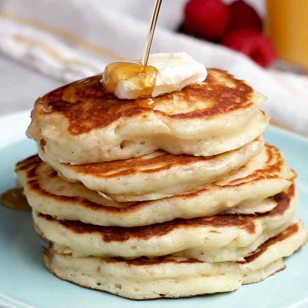

Buttermilk Pancakes

Description
Buttermilk pancakes are a classic breakfast dish that are sure to delight your taste buds. These fluffy, golden
cakes
are made with tangy buttermilk and a handful of simple ingredients, such as flour, eggs, and baking powder.
The result is a pancake that is tender, moist, and bursting with flavor. Whether you prefer yours smothered in
syrup,
drizzled with honey, or topped with fresh fruit, buttermilk pancakes are a versatile and satisfying breakfast
option.
So why not treat yourself (and your loved ones) to a stack of these delicious pancakes? With their irresistible
aroma
and mouthwatering taste, they are the perfect way to start your day off on the right foot.
Ingredients
- 3 cups all-purpose flour
- 3 tablespoons white sugar
- 3 teaspoons baking powder
- 1 ½ teaspoons baking soda
- ¾ teaspoon salt
- 3 cups buttermilk
- ½ cup milk
- 3 eggs
- ⅓ cup butter, melted
Steps
- Combine flour, sugar, baking powder, baking soda, and salt in a large bowl. Beat together buttermilk, milk,
eggs, and melted butter in a separate bowl. Keep the two mixtures separate until you are ready to cook.
- Heat a lightly oiled griddle or frying pan over medium-high heat. You can flick water across the surface and
if it beads up and sizzles, it's ready.
- Pour the wet mixture into the dry mixture; use a wooden spoon or fork to mix until it's just blended
together. The
batter will be a little lumpy which is what you want.
- Pour or scoop the batter onto the preheated griddle, using approximately 1/2 cup for each pancake. Cook
until bubbles
appear on the surface, 1 to 2 minutes; flip with a spatula and cook until browned on the other side. Repeat
with remaining batter.
- The most important step - serve hot and enjoy!